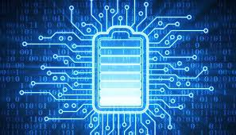

|  |
Lithium batteries and how it works
|
Lithium-ion battery facts:
-
When compared to other battery models, lithium-ion batteries can store more energy.
-
They can work with high currents.
-
Energy is reliably provided by them.
-
They don't have a "memory effect".
-
Compared to lead-acid batteries, they can last longer.
In simple terms, what is a lithium ion battery?
Lithium-ion batteries are rechargeable batteries generally used in portable electronic devices (like mobile phones and smart watches) as well as electric vehicles.
No matter what type of battery you find on the market, batteries work in a similar manner. A battery is connected to an electronic device and undergoes an electrochemical reaction.
In the past, nickel-cadmium batteries were used exclusively in portable electronic devices, but today, lithium-ion batteries are becoming the preferred choice for battery power at an incredibly rapid rate. Because lithium is the lightest metal
with the most significant electrochemical potential, it also has the highest energy density for its weight.
What are they made of?
In a lithium-ion battery, there are four main components:
-
The cathode, which is responsible for determining the battery's capacity and voltage, as well as supplying lithium ions.
-
The anode, through which electric current flows through an external circuit. This is where lithium ions are stored when the battery is charged.
-
The electrolyte, a mixture of salts, solvents, and additives, is responsible for transporting lithium ions between cathode and anode.
-
The separator, which separates the cathode and anode from each other.
How does it work now that we know the key components?
The electrochemical reaction mentioned previously involves ionizing and separating lithium atoms from their electrons. A lithium ion moves from the anode (negative electrode) through the electrolyte until it reaches the cathode (positive
electrode), where it recombines with its electrons.
In essence, lithium ions move from the negative electrode to the positive electrode during discharge and back again during charging.
|
Pros and Cons of Lithium-ione batteries:
|
|
Pros:
|
Cons:
|
-
Zero Maintenance:
Lithium Ion Batteries don’t require watering like lead-acid counterparts, nearly eliminating maintenance needs
-
Reduced Space and Labor Needs: Because of it’s zero maintenance you gain back watering space and personnel time with Lithium Ion Batteries
-
Faster Charging: Lithium Ion Batteries charge significantly faster than their lead-acid counter parts
-
Longer Run Time: Lithium Ion Batteries eliminate the need to charge at each shift
-
Longer Life: Lithium Ion Batteries boast over twice the life of lead-acid batteries
-
Reduced Energy Use: Lithium Ion Batteries require less power to charge to completion and also don’t have to be charged as frequently thereby reducing energy use and cost
|
-
Cost: Lithium Ion Batteries cost 3x more than their lead-acid counterparts on average
-
Equipment Connection: Current forklifts are not designed for lithium ion batteries. Forklifts must often be modified to fit the new batteries. While more and more equipment is coming on the scene that is designed for lithium ion
batteries, most today still is not.
-
Still Require Inspection: Despite their zero maintenance claim, Lithium Ion Batteries still require periodic inspection of cables, terminals, etc.
-
End of Life: Lithium Ion Batteries’ end of life cycle is not as straight forward as that of lead-acid batteries. While 99% of lead-acid batteries are recycled, only 5% of Lithium Ion Batteries are. And lead-acid batteries are less
costly
to recycle than Lithium Ion because most manufacturers factor recycling costs into the price of the product.
|
| BJJ |
⭐⭐⭐⭐ |
| Musiek |
⭐⭐⭐ |
| swem |
⭐⭐⭐ |
| Archery |
⭐⭐⭐⭐ |
| Athletics |
⭐⭐⭐⭐⭐ |
|